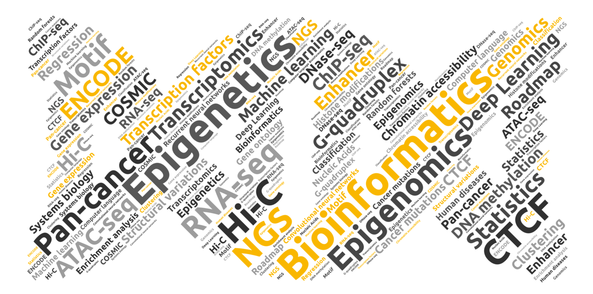
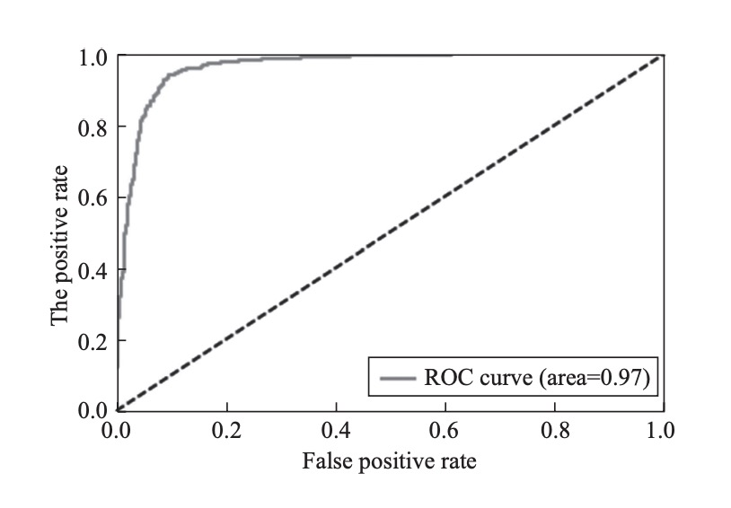
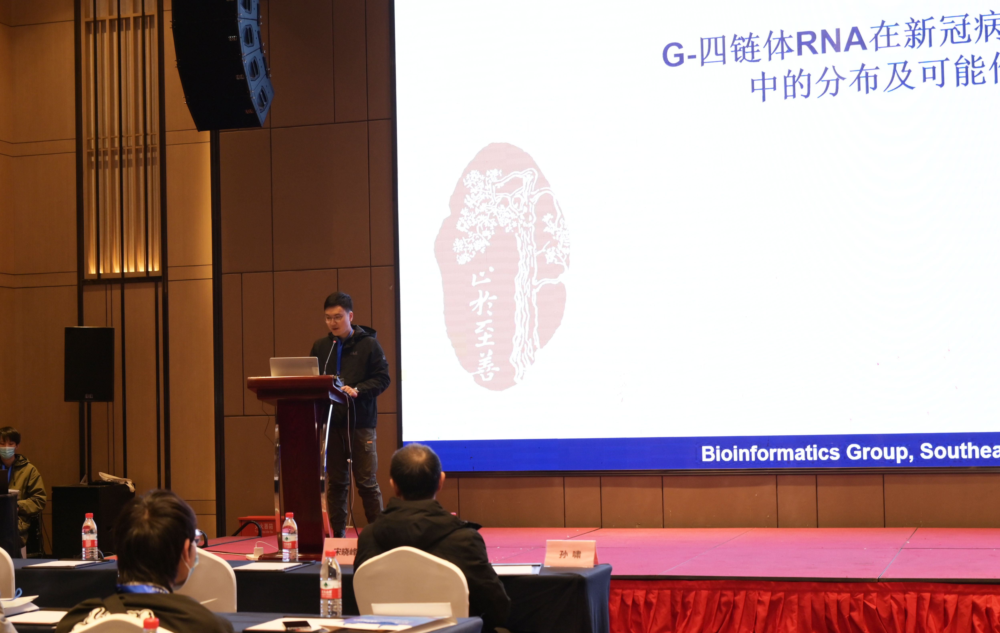
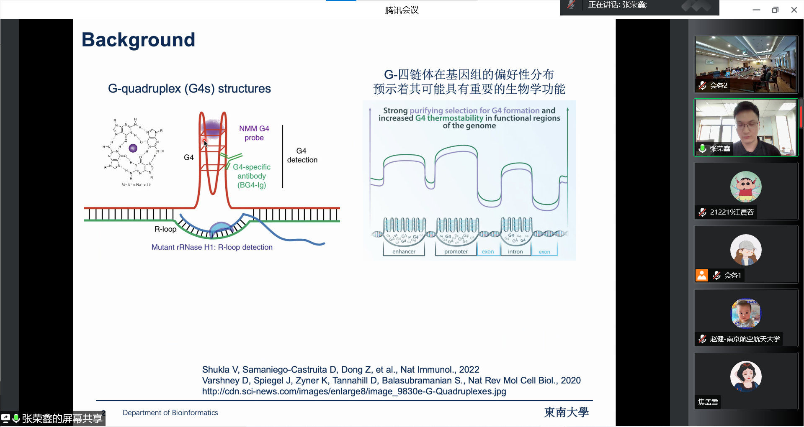

Rongxin Zhang

The greatest truths are the simplest.
Notice Dashboard
- Hello everyone, welcome to my personal webpage!
- Upcoming seminar: Quadruplexes Made in France. Click
About Me
Hey there, my name is Rongxin, great to meet you. I am a Ph.D. candidate in Bioinformatics at Southeast University, and a member of the State Key Laboratory of Bioelectronics.
Currently, I am a visiting Ph.D. student at Ecole Polytechnique, France, working in Prof. Jean-Louis Mergny's laboratory.
My research interests lie in the analysis and interpretation of human large-scale multi-omics data using bioinformatics methods, including genomics, transcriptomics, and more. My focus is to understand, uncover, and advance the functions and regulatory mechanisms of the human genome, with the goal of unlocking the secrets hidden within the "Book of Heaven" (the human genome). Particularly, I am fascinated by the impact of sequence variations (SNVs, SVs, etc.) and epigenetic modifications (DNA methylation, histone modifications, chromatin accessibility, 3D chromatin architecture, etc.) on the function of the genome, and how their dysregulation can contribute to the development and progression of various human diseases, such as cancer. In addition, I am passionate about utilizing machine learning methods to model and tackle biological and medical unresolved challenges.
My ongoing project concerns a non-B DNA secondary structure called G-quadruplex (G4). My goal is to investigate the potential biological functions of this structure from a genome-wide perspective, which will deepen our understanding of G4s and offer new insights into how G4s may contribute to diseases.
Education
| Attained Degree / Status | Duration of Study | Supervisor | Institution |
|---|---|---|---|
| Visiting Ph.D. | Fall 2022 - Present | Jean-Louis Mergny | Laboratory of Optics and Biosciences, Ecole Polytechnique, Palaiseau |
| Ph.D. candidate | Fall 2018 - Present | Xiao Sun | Deapartment of Bioinformatics, Southeast Univeristy, Nanjing |
| B.S. | Fall 2014 - Fall 2018 | Qianghu Wang | Deapartment of Bioinformatics, Nanjing Medical Univeristy, Nanjing |
Research Interests
- Human Epigenomics, Epigenetics & Diseases (Cancers)
- Non-canonical Nucleic Acid Secondary Structures, particularly G-quadruplexes
- Machine Learning Applications in Bioinformatics
News
- [Jun. 2023] Ecole Polytechnique (scheduled at the Pasteur Institute but changed due to the COVID-19 pandemic) successfully hosted the 'Quadruplexes Made in France' day.
Fifteen researchers from all over France in the field of G4 presented fascinating reports!

- [Jun. 2023] Professor Kateryna Makova from Pennsylvania State University delivered a presentation titled 'Non-B DNA and Evolution of Our Genomes' at the Laboratory for optics & biosciences, upon the invitation of Professor Jean-Louis Mergny from Ecole Polytechnique.
- [Jun. 2023] Rongxin participated in the G4 ANR seminar held in Marseille and gave an oral presentation.
- [Apr. 2023] Our work on radiomics subtypes of hepatocellular carcinoma was published in Cancers.
- [Mar. 2023] The Ph.D. student I supervised at Ecole Polytechnique, Kardelen, successfully defended her project. [Investigation of Promoter-G4 Oncogenes]
- [Feb. 2023] Our research article on the association of G4s with structural variants in cancers was available (online first) in Cancer Research! 🎉
- [Feb. 2023] Our latest research article on the prediction of in vivo G-quadruplex genome structures has now been published online in Biomolecules.
- [Oct. 2022] Start my Ph.D. visit at Ecole Polytechnique in Paris, France.
- [Jul. 2022] Oral presentation at the 2022 Young Scholars Forum on Bioinformatics and Artificial Intelligence. [Chinese Association for Artificial Intelligence]
- [Apr. 2022] We published a review article summarizing that G4 binding proteins are promising drug targets, which can be found at Biomolecules.
Fundings
- [No. 61972084] The National Natural Science Foundation of China. (Ranked 4th)
- [No. KYCX21_0143] The Postgraduate Research & Practice Innovation Program of Jiangsu Province. (Project Host)
Academic Services
Journal Reviewers
Publications
The first or co-first author publications are listed.
The full lists could be found at Google scholar.
-
 G4 & SV
Cancer Research, 2023.
G4 & SV
Cancer Research, 2023. -
 G4Beacon
G4Beacon
-
 RNA G4s
International Journal of Molecular Sciences, 2021.
RNA G4s
International Journal of Molecular Sciences, 2021. -
 G4 & SARS-CoV-2
G4 & SARS-CoV-2
-
 ML on Type 2 DiabetesCurrent Medical Science, 2019.
Books
-
 Bioinformatics
Biological Data Analysis and PracticeLanguage: Simplified Chinese.
Bioinformatics
Biological Data Analysis and PracticeLanguage: Simplified Chinese.
Publisher: Southeast University Press.
Publication date: December 2021.
Oral Presentations
-
 BioinformaticsGenomic distribution and potential role of RNA G-quadruplexes in SARS-CoV-2The 11th Bioinformatics Conference of Jiangsu Province, 2021, NanJing.
-
 CAAIIntegrative analyses reveal G-quadruplex structure as a key modulator of cancer genome instabilityChinese Association for Artificial Intelligence Young Scholars Forum on Bioinformatics and Artificial Intelligence, 2022, NanJing.
Keep in touch with me
Website theme: Minimal Light theme.
Website maintained by Rongxin.
Your IP Address:
Copyright©2022- Rongxin Zhang All Rights Reserved.